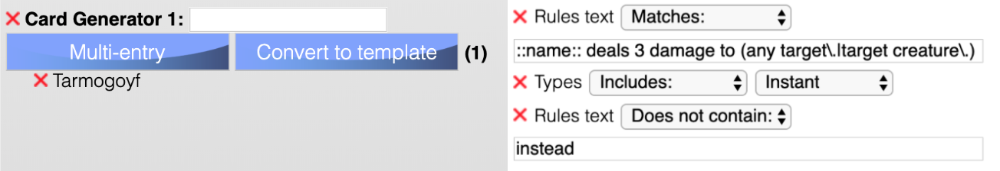
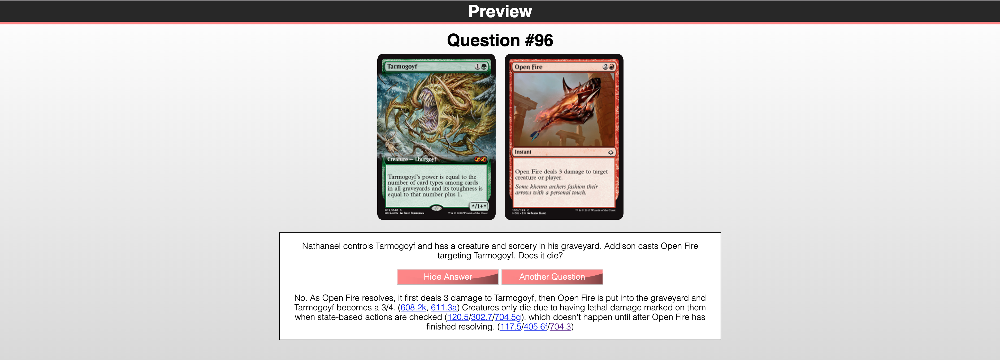

Welcome! This page should contain all of the information that you need in order to verify and approve questions as a member of the RulesGuru content generation team. If anything is missing or unclear, please let me know so I can answer your question and update this page. If you'd like a visual walkthough of the editor via Discord, let me know and I'm happy to schedule a time for that.
If you aren't familiar with RulesGuru from the user perspective, I'd recommend heading over to the home page and playing around with the filtering options and other features to get an idea of how the site works before continuing to read this page.
RulesGuru maintains a database of questions that have status "pending", "awaiting verification", or "finished". Questions that are submitted by most users on the public submission page begin with the pending status and are not visible to the public. Once a question has been formatted by an editor, it can be approved, which sets it to await verification. Once each type of guru has looked it over and confirmed everything looks correct, they again click "approve" and the question's status changes to "finished" and is visible to everyone. Questions that are submitted by an editor on the question editor are immediately set to await verification and do not go through the pending stage.
Your primary job is to add an accurate answer and explanation to pending questions, update the formatting to match the site specifications, and then approve them.
To view an unfinished question, log in to the question editor and click the "Get Unfinished Question" button. I can also have RulesGuru send you emails notifying you of questions that need your attention at regular intervals such as once a day or once a week. If you'd like to receive those emails, let me know.
If you prefer to write questions from scratch rather than format other peoples' questions, you can do that too. Go to the question editor and type your question in the blank fields, then press "submit as new question". You can also take note of interesting rules questions that you see at events or elsewhere and add them to the site. You don't need to fully format them right away if you're busy at the time; you can simply use the public submission page to submit a quick description of the question and then you or another editor can finish formatting and approving them later. Questions involving cards in the most recent set and other Standard-legal sets are especially helpful.
If you're unsure of the correct answer to a question, the RulesGuru Discord server is a great resource to help out. (The #question-help channel in particular.) You're always welcome to leave an unfinished question pending and you or another editor can finish it later.
Lastly, please keep an eye out for anything that could be improved. If there's a feature that could make your workflow easier, I'd like to know about it so that I can implement it.
Your primary job is to look over questions that are awaiting verification, make sure all the fields within your purview are correct, fix anything that isn't, and write a quick description of anything you had to change in the prompt that pops up when you approve the question. This feedback will be sent to the editor of that question, so they can avoid those mistakes in the future.
- Grammar Guru: You're in charge of checking the grammar, spelling, and general phrasing of questions and answers. (The preview is a great help for this.) Some more guidelines that should be followed are here.
- Template Guru: You're in charge of looking over the card generators for the question. Look them over, expand or restrict them if necessary, and hit approve. Always check the preview for each generator and ensure nothing slipped through, as that is one of the most common problems. More information about card generators is here.
- Rules Guru: Your most important job is to make sure the answer is correct. In addition to that, check the wording to make sure it's going to be easily understandable by anyone, regardless of how much prior rules knowledge they have. Make sure that all relevant rules are cited in the answer. (More information about rule citations is here.) Lastly, look at the question's level, complexity, and tags, and ensure they all look correct. (Missing tags are one of the most common problems.) Also check that AP is indeed the active player, and NAP isn't casting a sorcery illegally. (Also a common problem.) Some additional guidelines to follow are here.
To view a question that's awaiting verification, log in to the editor and click the "Get Unfinished Question" button. I can also have RulesGuru send you emails notifying you of questions that need your attention at regular intervals such as once a day or once a week. If you'd like to receive those emails, let me know.
If you'd like to write your own questions from scratch, you can do that too. Go to the question editor and type your question in the blank fields, then press "submit as new question".
Please keep in mind that any errors have the potential to be seen by hundreds of people, and be sure to double check every question before finalizing it. The preview is an invaluable tool for this, and I'd recommend having it open for every question. (You can pull it out into its own window in order to see it and the question editor concurrently.) If you're unsure about anything, you can ask about it in the RulesGuru discord server.
Lastly, please keep an eye out for anything that could be improved. If there's a feature that could make your workflow easier, I'd like to know about it so that I can implement it.
Question Editor Elements
The question editor has many different elements, so I've tried to explain each of them in detail below. For particulaly complex features, you can also hover your mouse over a button or line of text on the question editor and it'll display a tooltip that tells you more about it.
Pressing "Get Unfinished Question" at the top of the page will load a random question that needs approval.
You can also directly load a specific question by typing its ID into the ID box and pressing "Get Question #". This is useful if you want to return to a pending question you were working on but had left unfinished.
Don't forget to save any changes you make before loading another question!
The "Update" button will update the question in the database with the changes you've made to it; the status of the question will not be changed. (i.e. If it was pending, updating it will leave it pending; it won't become visible on the main site.) In order to change the status of a question, use the approve/de-approve buttons.
You can also submit questions of your own on the question editor to bypass the pending stage. Pressing "Submit as New Question" will submit the information currently displayed on the page as a new question. Any questions submitted this way will immediately be put into the "awaiting verification" queue.
While editing an existing question, the "Submit as New Question" button is still visible. Pressing it at this time won't change the question that's being edited, but will instead create a new question in the database with the current text in the fields on your screen. This is intended for the case where you're viewing an existing question and get an idea for a similar one. Rather than having to start from scratch, you can simply make the changes that you'd like to make and submit it as a new question.
Pressing the "Preview" button in the upper right opens a live preview of the current question in a new tab or window, depending on your browser preferences. This preview will immediately reflect all changes you make on the question editor. I would highly recommend checking the preview at least before approving a question, as it allows you to see what the question will look like once finished, and makes it much easier to catch errors. You can put the two windows side-by-side on your monitor in order to see the preview update live as you type.
The preview will also display the results of any card generator you currently have open in the editor.
This is the name of the person who submitted the question, if they included one. If the name is clearly inappropriate, remove it. (Usernames and nicknames are acceptable.) If it's not capitalized, please do so. Otherwise you can leave this field alone.
Any questions that you submit yourself on the question editor will automatically have your name as the submitter, you don't need to fill it out.
Level and Complexity
The difficulty of a question is subdivided into two categories: level and complexity. These are two different metrics, and do not necessarily scale together. Level is the difficulty of finding an answer to the question, while complexity is the difficulty of understanding what's being asked in the first place. In more detail:
A question's level is the amount and specificity of rules knowledge that's required in order to answer it. A level N judge should be able to answer a level N question without needing to consult the rules for longer than a few seconds. In other words, if you wouldn't be surprised to see this question on a level N judge test on Judge Academy, it's a level N question on RulesGuru. (The inverse does not apply; some questions may not exist in a Judge Academy test for a different reason, but are still appropriate for RulesGuru.) You can explore Judge Academy's division of topics here.
- Level 0: Intro-level questions that any long-time Magic player will probably know the answer to. These are questions that may come up while first teaching someone how to play Magic. If the situation can't occur with the cards in an intro deck, it's probably not level 0.
- Level 1: Questions about common interactions that often occur in games. Most players who have been seriously playing Magic for a long time (even if they've never been a judge) will have a general idea of the answer to these questions, although they may not be able to fully explain why it works that way.
- Level 2: Slightly rarer interactions that could still reasonably occur in a tournament or casual play.
- Level 3: Significantly rarer interaction that are unlikely to come up in real games.
- Corner Case: Only the most knowledgeable rules gurus will know the answers to these questions. This is functionally a "level 4" question, but there isn't a 4th judge level, so this level on RulesGuru has a different name. Questions that aren't particularly hard to answer but are conceptually a "corner case" in that they're not likely to come up in a real game should still be given a lower level.
Note that level takes into account the commonality of the interaction, not the specific card. Ali from Cairo is not a card you see often, but Angel's Grace is, so they should be handled the same way. Also note that commander games are real games. :)
A question's complexity is the number of different objects and interactions that must be kept track of.
- Simple: Straightforward questions about a specific interaction involving just a few cards. Generally easy to comprehend after a single read-though.
- Intermediate: Questions about an interaction that requires several different cards (generally 4 or more, but there are other factors), or questions that are more about keeping track of multiple objects than about a rules interaction. The reader may need to read over the question multiple times before starting to think about the answer.
- Complicated: Very intricate questions that involve a large number of objects or interactions.
You should also take into account the amount of relevant text on the card. A question involving Chains of Mephistopheles would be a higher complexity just because of how much you have to read in order to know what the card does. Irrelevant text is not considered; Using Sphinx Ambassador in a question about flying doesn't add to the complexity, because the other text on the card doesn't matter.
When a question involves a keyword, take into account how likely someone is to have the relevant portion of keyword memorized, and how hard it is to hold in your mind what that keyword does. A keyword like phasing is conceptually simple but has many weird potential interactions, so phasing would increase the level of the question and not the complexity. Banding on the other hand is a mess of different functions that is hard to remember, so banding would increase the complexity of a question. The same goes for simpler keywords that people simply aren't going to encounter very much. Bushido, recover, frenzy, etc. are very simple to understand once you've read their definition, but aren't likely to be memorized, so their inclusion would increase the complexity of a question.
As some further examples of the difference, here you can see some questions that are level 1 but complexity = "complicated", and here you can see the opposite type of question with the lowest complexity but the highest level.
This is where you type the content of the question and answer. The special formatting for things like player and card names can be found here. Guidelines and best practices also have their own section here.
You can reference a card generator in the answer that isn't in the question if you want to use it as an example or comparison to help illustrate a point. Any card generators referenced in the answer only will not display an image to the user until they press "view answer".
Each question has some number of tags: a list of labels that help categorize the topic or topics that the question is about.
Please add any tags that relate to the question. The list of all possible tags can be seen by selecting the input box and scrolling through the drop-down list. (For example, a question about the difference between triggers and replacement effects should have both of those tags.) If there's a tag category that you think would fit your question but isn't in the dropdown list, please let me know.
Each card in the question is chosen randomly from among a set of cards that do equivalent things. For example, most questions involving Shock would work equally well with Tarfire, so you can specify that the question will randomly pick between the two. This dramatically increases the effective question pool for minimal effort.
Type "[card 1]", "[card 2]", etc in place of card names in the question and answer fields, and enter the constituent cards into a list or template. You can also type individual card names in brackets (like "[Tarmogoyf]") and they'll be converted into lists automatically.
Templates dynamically generate sets of cards that match a set of rules you specify. Explanation of the individual template fields can be found by hovering over the field in question in the template creation box.
To return cards that match either of two rules, like "type=instant OR type=sorcery", press the "Add OR group" button and then click on each rule you want to be included in the group.
Please be conservative when making card generators. While having a large selection of available cards is nice, it's more important that every card fits the question properly. The preview window will let you glance over all the generated cards in order to make sure there are no issues. Templates are more robust and future-proof than lists, so use templates rather than lists when possible. Sometimes for a complicated requirement that can't be easily templated, a list might be better.
Be careful to avoid cards in a template or list that can make the question not function as intended, such as a creature with shroud or a burn spell that has an exile clause. Some additional tips and common lists and template formats can be found here. Feel free to contribute to that document with anything that you find useful.
When designing a template, it's good practice to address the fundamental conceptual attributes of the sort of card that the question requires, rather than looking for coincidental attributes that happen to match all existing cards. This will help prevent newly-released cards from showing up in a template where they don't belong.
When possible, try to match format between all card generators. For example if a question is about a card from the newest set, all other card generators in the question should also include at least one card from that set if possible. This way if someone is viewing questions restricted to that set, that question will show up. (It's ok if the card generators include some cards that aren't from that set- at long as there's one permutation of the question that's legal in set constructed, it'll show up in the search.)
Always ensure that the cards used in the original question are one of the possibilities in the generators used in the final question.
You can use regular expressions to search card text for templates. While not required, they're very versatile and tend to be more useful than plaintext. To learn more about regular expressions, there's a good introduction to their use in Magic here, an interactive tutorial here, more in-depth and searchable documentation here, and a nice debugging and exploration tool here.
Note that nontraditional cards such as dungeons and Attractions will not appear in templates. You must access them using a card list instead.
RulesGuru uses several non-literal formatting types (referred to here as "expressions"), which are either replaced with randomly-generated content (player names and cards) or with special formatting (rule citations and symbols). All expressions should be enclosed in brackets, except for some symbols, which use braces.
In most cases you won't need to type the brackets or braces yourself; RulesGuru will add them automatically as you type. Capitalization is also fixed for you.
Player names are randomly generated. Simply type the type of player and RulesGuru will replace that with an actual name when the question is displayed on the main page.
Default: [AP], [NAP]
Multiplayer: [AP], [NAP1], [NAP2], [NAP3]
Two-Headed Giant: [APa], [APb], [NAPa], [NAPb]
AP is the active player and NAP is the non-active player. Multiplayer NAP names are in turn order; NAP1 is the player after AP, NAP2 is next, etc.
Card generators are enclosed in single brackets: "[card 1]", "[card 2]", etc. You can also enter individual card names in brackets and they'll be converted into lists automatically. More information on card generators is here.
An "a" or "an" proceeding a card name will be automatically changed based on what name is generated, so you can safely use either. Similarly, if you pluralize a card name like "three [card 1]s", the extra s will be removed if a card name that ends with "s" is generated.
If you need to refer to the other side of a multi part card (double-faced cards, flip cards, split cards, etc.), you can do this with a colon and "other side", as in "[card 1:other side]". (Note that this won't work for the melded face of meld cards, since there are two "other sides".)
If you want to refer to a specific characteristic of a card, you can also do that by typing the name of the characteristic after a colon, such as in "[card 1:power]". You can reference colors, color identity, mana cost, mana value, color indicator, supertypes, types, subtypes, power, toughness, and loyalty.
For characteristics like colors and subtypes that can contain multiple values, they're returned as a normal English list, such as "Human and Wolf" or "Human, Wolf, and Werewolf". If you want the separators removed so that it displays as "Human Wolf Werewolf" like it would on the type line of a card, add on ":simple" to the end, as in "[card 1:subtypes:simple]". (Not necessary for mana cost, that will always display as the plain symbols.)
You can combine these to refer to characteristics of the other side, as in "[card 1:other side:mana value]".
You can also perform basic math operations on any that return a number. For example you can type [card 1:power + 1] or [card 1:mana value + card 2:mana value]. The legal operators are "+", "-", and "*", with a space on each side. If you use more than one, such as in [card 1:power + card 2:power - card 3:toughness], they're evaluated in order, left to right.
Any statement in the answer should be backed up with one or more rule citations. A rule citation is simply the rule number of the appropriate section in the comprehensive rules, inside brackets. (With no period at the end.) Gatherer rulings are not rules and are not used in RulesGuru's answers except as specified here.
Most rule citations are not part of the statement that they're referring to, so they should be in parentheses directly after that statement. (If it's in the middle of a sentence at the end of a phrase or clause, put it before the comma. If it's is at the end of a sentence, put it after the period.) In rare cases the answer will need to directly reference a rule as part of the sentence, in which case it should not be parenthesized.
If multiple redundant rules all say the same thing, quote all of them, separated from each other with a slash. (This allows user searches for specific rules to find the maximum number of relevant questions.) If multiple rules say different things that are all relevant to the phrase, include them all separated by commas.
Examples:
- [AP] may concede at any time, even while a spell is resolving. ([405.6g])
- Devoid is applied before Painter's Servant ([613.1e], [613.3]), so it's blue.
- It dies when state-based actions are checked after the spell resolves. ([117.5]/[704.3])
- It's unclear whether [616.1f] allows a replacement effect in a later step to apply to one in an earlier step.
RulesGuru can render mana symbols and other symbols in the question and answer text. Those symbols can also be used in the "mana cost" and "rules text" template fields. (Including in regular expressions.) Here is the full list of possible symbols:
{W}
{U}
{B}
{R}
{G}
{0}
{1}
{2}
{3}
{4}
{5}
{6}
{7}
{8}
{9}
{10}
{11}
{12}
{13}
{14}
{15}
{16}
{17}
{18}
{19}
{20}
{X}
{Y}
{C}
{S}
{P}
{W/P}
{U/P}
{B/P}
{R/P}
{G/P}
{2/W}
{2/U}
{2/B}
{2/R}
{2/G}
{W/U}
{W/B}
{U/B}
{U/R}
{B/R}
{B/G}
{R/W}
{R/G}
{G/W}
{G/U}
{W/U/P}
{W/B/P}
{U/B/P}
{U/R/P}
{B/R/P}
{B/G/P}
{R/W/P}
{R/G/P}
{G/W/P}
{G/U/P}
{E}
{T}
{Q}
{CHAOS}
[0]
[+1]
[+2]
[+3]
[+4]
[+5]
[-1]
[-2]
[-3]
[-4]
[-5]
[-6]
[-7]
[-8]
[-9]
[-10]
[-11]
[-12]
[-13]
[-14]
[-15]
In the mana cost field you also have access to the following pseudo-symbols that will match more than one symbol:
::generic::
::phyrexian::
::hybrid::
::white::
::blue::
::black::
::red::
::green::
In rare cases, you may want to include an external link in the question or answer. You can do that with HTML, like this:
<a href="URL goes here">link text goes here</a>
You type:
ap taps stomping ground for g. they cast lightning bolt during their main phase.
RulesGuru changes this into:
[AP] taps [card 1] for {G}. They cast [card 2] during their main phase.
The preview renders:
Adena taps Stomping Ground for . They cast Lightning Bolt during their main phase.
A user submits a well thought-out and clearly written question.
"lighnting bolt goyf, what do?!?!?!"
You update the question's wording to be more explicit and have player and card expressions.
"[NAP] controls [card 1] and has a creature and sorcery in their graveyard. [AP] casts [card 2] targeting [card 1]. Does it die?"
You convert the cards to expressions and their associated generators. [card 1] requires a fairly unique card so it should be a card list containing only Tarmogoyf. (You can simply type "[Tarmogoyf]" in the question and it'll be converted into a card list automatically.) [card 2] can be any instant that deals 3 damage to a creature and doesn't have some replacement effect that could make it do something unintended, so you convert it to a template with those rules.

You add an answer with rules citations.
"No. As [card 2] resolves, it first deals 3 damage to [card 1], then [card 2] is put into the graveyard and [card 1] becomes a 3/4. ([608.2k], [611.3a]) Creatures only die due to having lethal damage marked on them when state-based actions are checked ([120.5]/[302.7]/[704.5g]), which doesn't happen until after [card 2] has finished resolving. ([117.5]/[405.6f]/[704.3])"
You add relevant tags to the list.
"Damage", "Resolving objects", "State-based actions", "Zone changes", "Timing and priority", "Abilities", "Static abilities", and "Continuous effects".
You determine the difficulty of the question.
Level: 1, Complexity: Simple
You check the preview to make sure everything looks good.

You submit the update.
Result
- Changing question phrasing from what was originally submitted is perfectly ok. It'll often be necessary if the original question was worded poorly or grammatically incorrect. However, do not change the fundamental question itself to something different. Always ensure that the cards used in the original question are one of the possibilities in the card generators used in the final question.
- Trick questions or questions with misleading (but still unambiguous) wording are allowed; players will often unintentionally ask judges these sorts of questions, so it's important that judges can identify the flaw in the premise and figure out what actually needs addressing. The explanation for these questions on RulesGuru should always be written so as to clear up any potential confusion stemming from the question. This might sound something like "This can't happen as described because [reason]. If it could happen, the answer would be [answer]".
- Questions that don't have an answer in the rules are allowed. (See here.)
Primary guidelines
These guidelines are important and should always be followed.
- Don't include extra information in the answer. The answer should clearly explain the interaction with as many words as needed, but expanding further into different situations is not necessary. Using an example of a similar situation should be avoided in general but is fine if it's a complicated answer and the example would significantly help.
- State the simple answer to the question first, then include the explanation. For example if the question is "Can AP cast this spell", don't launch directly into an explanation of the steps to casting spells, say "yes" or "no" first and then have the explanation afterwards.
- Answers should explain the interaction in depth in simple English, don't just copy-paste the CR. Rules citations are provided as jumping-off points for people who want to become more familiar with the structure of the rules, but the answer text should be the only thing that less serious users need to read in order to understand why it works that way.
- If the question includes a card in a particular "state" (flipped, attached, gained a certain ability, etc.), explain how it got it into that state as part of the question, and include the cards that let it get there. (Otherwise, a question that just states "AP controls a face-down Forest" would show up as a Standard-legal question even though there's no way for that to happen in Standard.)
- "[AP]" and "[NAP]" as expressions act as names for players. If a question spans multiple turns, "AP" should be the active player on the turn in which the question begins, and their names shouldn't change even as other players become the active player.
- Use gender-neutral pronouns for all players.
Secondary guidelines
These guidelines are less important. While it's best if you followed them, there are a lot of them and it's ok if you can't remember them all. It's also ok to intentionally deviate from one if there's a compelling reason to do so.
- Questions should be open-ended. "How much damage is dealt to NAP?" is better than "Is NAP dealt 2 or 4 damage?"
- Use actual cards rather than vague hypotheticals. If a question requires an instant that deals 3 damage, don't say "[AP] casts an instant that deals 3 damage targeting [NAP], use a template to define all of the valid options instead. This way the question can be indexed in format searches properly. For example, if you say "AP controls NAP's turn" without specifying how, that question could show up as a Standard question, despite no cards in Standard actually allowing that to happen. If you specifically use Mindslaver or whatever other card, the question will only show up in formats in which that card is legal.
- Don't predicate questions on a player doing something strategically poor if easily avoidable.
- Answers should generally explain any common follow-up questions that you'd expect someone to have as well as answering the original question. If the secondary answer would be particularly long or involved, it's ok to omit it.
- Subtypes should be capitalized. Types and supertypes should not be capitalized unless they're part of an entire type line. For example "creature" shouldn't be capitalized in the statement "Boon Satyr is a creature", but should be capitalized in "Boon Satyr is an 'Enchantment Creature - Satyr'".
- Don't capitalize keywords, ability words, zones, steps, phases, or other things like that. (Unless they're at the beginning of a sentence of course.)
- Cards should not be prefaced with "a" or "the". "AP controls Tarmogoyf and Storm Crow" is better than "AP controls a Targmoyf and a Storm Crow"
- Don't use slang or non-technical terms like "fizzle", "crack", "fetch", "in play", "alternate cost", etc.
- Numbers should be spelled out unless they're referring to life, damage, power, toughness, loyalty, or mana value. "AP draws four cards and loses 4 life." (This matches how the cards themselves are templated.)
- Don't use "I", "you", or "we", in a question. Refer only to the players in the game.
- Don't reference reminder text or ability words (unless you want to say something like "ability words have no rules meaning" in the answer).
- If you're referring to a choice, like that made for Cavern of Souls or Sanctum Prelate, the choice's value should be in quotes.
- When referring to "X" as a variable (or "Y"), it should be capitalized.
- Use double quotes rather than single quotes.
- Use the oxford comma.
- Don't use emoji or emoticons.
- If there are multiple possible spellings of a word, use the one that's used on Magic cards. For example, "color" rather than "colour".
RulesGuru will automatically try to identify problems in the question data. It breaks these down into two categories, "errors" and "warnings". Errors are serious issues that must be fixed before the question can be approved. They appear in red at the top of the preview window. (Or grey while recalculating.)
Warnings are minor issues that should be looked at, but can be left unfixed if there's a good reason. Warnings appear in yellow at the top of the preview window. If you attempt to submit a question while there are remaining warnings, the page will prompt you to fix them first, but you can choose to skip that step.
Whenever you encounter an error or warning that you believe isn't actually a problem for the question you're editing, please notify me so that I can refine the algorithm. Similarly, if you notice a problem in a question that RulesGuru did not catch automatically, and you think it might be possible to catch such errors automatically, please let me know abuot that as well.
Rules and oracle text change sometimes and questions must be updated in order to remain correct. If you see a question that is no longer correct, please fix it or notify me of the issue. You don't need to spend excessive time going through questions after a rules change, I will take responsibility for updating questions that have become out-of-date.
If you notice a rules citation that has become incorrect due to a reassignment of rule numbers (for example if a new rule 103 gets added and the old 103 becomes 104, 104 becomes 105, etc), please do not fix those yourself. I run a script to update all rules citations at once and changing one without changing the others will corrupt the result. I try to update any rules citations as soon as the new rules come out, but if you notice an incorrect rules citation please notify me rather than fixing it yourself.
Questions should be about the Magic: The Gathering "comprehensive rules" only, and only those rules that actually apply to gameplay. The following topics should not be mentioned in a question:
- Tournament policy and structure.
- Deck construction and format legality.
- Section 722 of the CR, Taking Shortcuts.
- Section 723 of the CR, Handling Illegal Actions.
- Cards with mechanics that cannot be covered comprehensively by rules. (Chaos Orb, Falling Star, and Goblin Game.)
- Cards from Unglued, Unhinged, or Unstable.
- Unofficial cards such as Robot Chicken, 1996 World Champion, or Grimlock, Dinobot Leader.
- All casual variants in section 9 except for Commander.
- Hypothetical situations that cannot occur with existing cards.
Loops and Handling Illegal Actions are in an awkward grey area across both rules and policy. We can draw a line between the two based on what's in the CR vs in the MTR, and also on the fact that rules are designed to have a single correct answer, while policy is open to interpretation by the judge giving the ruling. As some examples, these sorts of questions are "rulesey" enough to be on RG:
- Is this series of actions legal?
- Can this series of actions be repeated indefinitely?
- What are the possible end results of this loop?
While these sorts of things would fall under policy and shouldn't be mentioned on RG:
- Does this loop qualify as "advancing the game state"?
- Which player will be forced to take an action in order to break this loop?
- What type of loop is this classified as in the MTR?
- What physical actions is the player allowed to take in order to shortcut a loop or series of actions?
- What happens if a player takes a certain illegal action?
Sometimes the comprehensive rules will not include an answer to a given rules question, or the answer the CR gives will conflict with what Wizards of the Coast intends to happen. In these cases, the question should be given the "Unsupported answers" tag. The answer section should begin with the intended answer to the question, followed by whatever justification exists for it. This could be a Gatherer ruling, a JudgeApps post, a tweet by the rules manager, etc. (You can link to the official answer as described here.) After this, you should explain what the CR actually says and how it conflicts with the intended answer.
You can see some examples here.
RulesGuru supports spoilers for upcoming cards, you'll be able to add them to card generators as normal even before the set is released. If a question includes currently-unreleased cards, feel free to approve it as normal. If you're an editor and need to cite the rules about a new mechanic and the new rules aren't out yet, just format the rest of the question and approve it without citations. It'll remain in the verification queue until the new rules are released, at which point our rules gurus will go through the queue and add citations to them all.
If you're a rules guru and see a question about unreleased rules in the verification queue, please leave it there. Template gurus and grammar gurus can sign off on it as normal.
Thank you so much for volunteering to help out with RulesGuru. As judging gets more and more professionalized, receiving payment for work starts to becomes an expectation. While for large organizations this may be feasible, smaller projects like RulesGuru tend to fall by the wayside. I'm thankful that you find RulesGuru to be worth your time.
I want RulesGuru to be the best possible resource for judges and for players. If you ever notice anything that could be improved or optimized, including on the content generation side of things, please let me know. If you have questions about this information or any other part of RulesGuru, please don't hesitate to ask in the RulesGuru Discord server.
All content that is submitted to or edited on RulesGuru is the intellectual property of Isaac King.